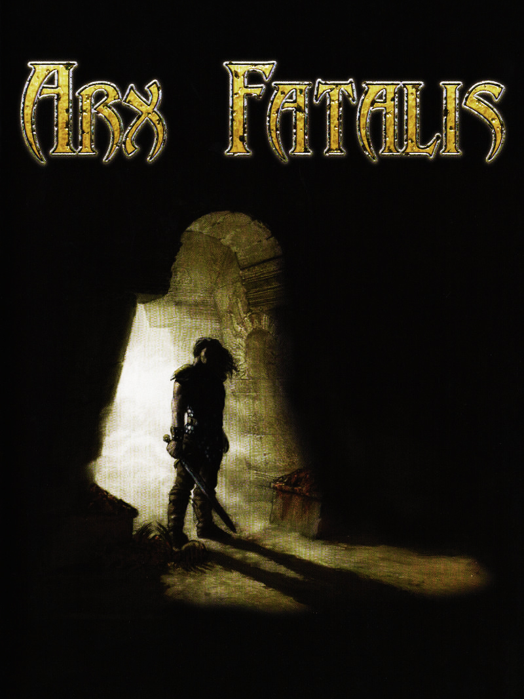

 |
|
| Tiempo de juego | 3m 24s |
| Última actividad | 16/1/2026 11:33:12 |
| Añadido | 27/7/2025 0:29:57 |
| Modificado | 10/12/2025 11:24:40 |
| Estado de finalización | Jugado |
| Librería | Playnite |
| Fuente | |
| Plataforma | PC (Windows) |
| Fecha de lanzamiento | 28/6/2002 |
| Puntuación de la Comunidad | 79 |
| Puntuación de la Crítica | 78 |
| Puntuación de usuario | |
| Género | Adventure Puzzle Role-playing (RPG) |
| Desarrollador | Arkane Studios |
| Editor | Arkane Studios Bethesda Softworks Capcom DreamCatcher Interactive JoWooD Entertainment AG Mindscape |
| Característica | Single Player |
| Enlaces | Steam GOG |
| Tag | Voz y Texto en Español |
Antes de que existieran Dishonored o Prey, los genios de Arkane Studios se mandaron esta joya oscura y recontra inmersiva. Arx Fatalis no es un jueguito para cualquiera, es un RPG de la vieja escuela, áspero y sin piedad, que te agarra y no te suelta.
Imaginate esto: el sol se murió y toda la humanidad se tuvo que ir a vivir bajo tierra. El ambiente es claustrofóbico, denso... la atmósfera se puede cortar con un cuchillo, te sentís posta atrapado en esas cavernas. Pero la verdadera locura de este juego es el sistema de magia: acá olvidate de apretar un botón para tirar una bola de fuego. ¡Tenés que DIBUJAR las runas en el aire con el mouse para lanzar un hechizo! Una mecánica revolucionaria que te hacía sentir un mago de verdad, aunque a veces puteabas en arameo cuando no te salía.
Es el sucesor espiritual del legendario Ultima Underworld, un RPG en primera persona que te exige usar la cabeza. Podés hornear pan, pescar, combinar objetos... no te llevan de la manito. Si te la bancás y te sumergís en su mundo, vas a descubrir uno de los juegos de rol más originales y con más personalidad de la década del 2000.
Un verdadero tesoro para los que buscan una experiencia profunda y desafiante.